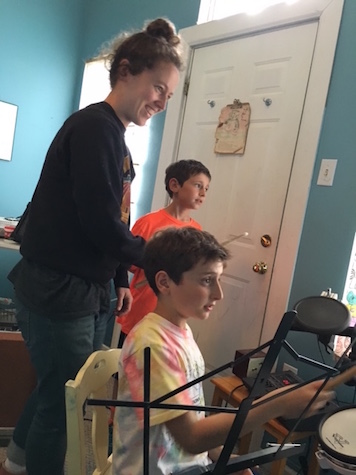

Ab Cannon, founder of the beat school, holds a B.A. in music, is a
multi-instrumentalist, and has been teaching music lessons passionately
for years. Beatmaking/production has been their personal obsession as well
as profession for 8+ years. They have produced music for vocalists, podcasts,
indie video games, and commercials.
Because of its emphasis on critical listening and transcription, Ab believes that beatmaking is one of the best ways of learning music. They started St Johns Beat School with the hope of making beatmaking lessons as common for youth as guitar or piano lessons.
Here is their bio taken from magicdropmusic.com:
"Producer/composer Ab Cannon hops genres like a picket fence. Their work is a kaleidoscopic exploration of their vast electronic palette: playful synth pads and MIDI strings, skittering hi-hats and boom bap, toy electronics and 8-bit rumbles. At any given point they could be glitch-stepping toward a boss battle, admiring a Casio sunset, or beat boxing behind a wave of gentle acoustic chords and vocal loops. All this in pursuit of the mystic and wondrous place where knocking beats and lush counterpoint meet."
Because of its emphasis on critical listening and transcription, Ab believes that beatmaking is one of the best ways of learning music. They started St Johns Beat School with the hope of making beatmaking lessons as common for youth as guitar or piano lessons.
Here is their bio taken from magicdropmusic.com:
"Producer/composer Ab Cannon hops genres like a picket fence. Their work is a kaleidoscopic exploration of their vast electronic palette: playful synth pads and MIDI strings, skittering hi-hats and boom bap, toy electronics and 8-bit rumbles. At any given point they could be glitch-stepping toward a boss battle, admiring a Casio sunset, or beat boxing behind a wave of gentle acoustic chords and vocal loops. All this in pursuit of the mystic and wondrous place where knocking beats and lush counterpoint meet."

"Rhythm is the most perceptible and least material thing." ~John Miller Chernoff